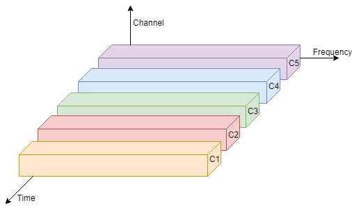
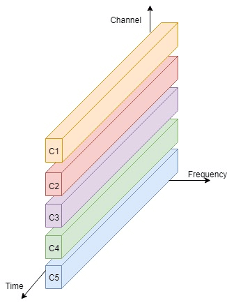

Multiplexing is a technique used in the area of electronics and signal processing. In mobile computing, telecommunications and computer networks, Multiplexing is a method that can be used to combine multiple analog or digital signals into one signal over a shared medium. The main aim of using this method is to share a scarce resource. Example: You can see a real-life example of Multiplexing in the telecommunication field where several telephone calls may be carried using one wire. Multiplexing is also called as muxing.
The concept of Multiplexing was originated in telegraphy in the 1870s. Nowadays, it is widely used in communications. George Owen Squier is called the father of Multiplexing in telephony. He was credited for the development of telephone carrier multiplexing in 1910.
Frequency division multiplexing or FDM is inherently an analog technology. As the name specifies, in Frequency Division Multiplexing, the frequency dimension spectrum is split into smaller frequency bands. It combines several smaller distinct frequency ranges signals into one medium and sends them over a single medium. In FDM, the signals are electrical signals.
FDM's most common applications are a traditional radio or television broadcasting, mobile or satellite stations, or cable television.
For example: In cable TV, you can see that only one cable is reached to the customer's locality, but the service provider can send multiple television channels or signals simultaneously over that cable to all customers without any interference. The customers have to tune to the appropriate frequency (channel) to access the required signal.
In FDM, several frequency bands can work simultaneously without any time constraint.
The Time Division Multiplexing or (TDM) is a digital or analog technology (in rare cases) that uses time, instead of space or frequency, to separate the different data streams. It is used for a specific amount of time in which the whole spectrum is used. The Time frames of the same intervals are divided so that you can access the entire frequency spectrum at that time frame.

The Code Division Multiplexing or (CDM) allots a unique code to every channel so that each of these channels can use the same spectrum simultaneously at the same time.
